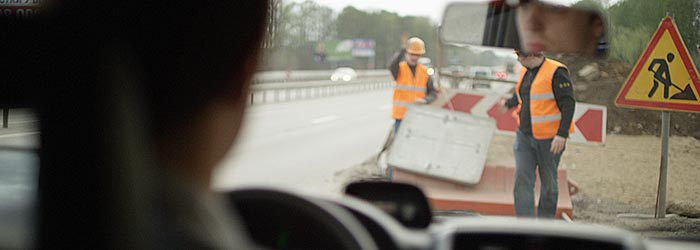
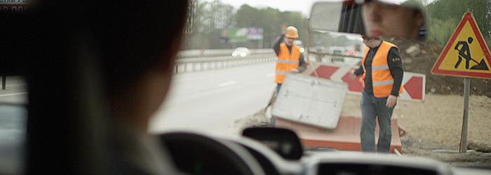

Участники проекта
Мария Артеменко
режиссер
Высшие курсы кино и телевидения, Всероссийский государственный университет кинематографии имени С.А. Герасимова, мастерская А.И. Богуна: специализация "второй режиссер". Короткий метр: версия фрагмента пьесы Л. Зорина "Варшавская мелодия".
Опыт работы на площадке:
Км/фильм "Девушка и вор", режиссер Юлия Дмитриева: второй режиссер. Км/фильм "Колокол", режиссер Дмитрий Майоров: второй режиссер. Км/фильм "Приз на миллион", режиссер Ольга Мишина: ассистент реквизитора, ассистент режиссера, эпизодическая роль водителя. Км/фильм "Позывной", режиссер Александр Гох: помощник режиссера по актерам. Мария в facebook.com
Денис Мелконян
сопродюсер
Сопродюсер, эпизодическая роль злого водителя. Любимые фильмы: Любимые сериалы: Любимые мультфильмы: Любимая книга: Денис в facebook.com Персональный сайт Дениса - Structura
Александр Артеменко
сопродюсер
Сопродюсер, эпизодическая роль участника аварии. Любимые фильмы: Yes Man, Pay It Forward, Into the Wild Любимые сериалы: Doctor Who, Futurama Любимые мультфильмы: Tonari no Totoro, Porco Rosso, Tenkuu no Shiro Laputa Любимая книга: Таинственный Остров, Ж. Верн Александр в Твиттер
Съемочная группа:
Дмитрий Пратт
оператор-постановщик
Последние работы Дмитрия: "Освободители Минин и Пожарский", "Крючков", "Украденные коллекции", "Частные армии", "Наука привлекательности", "Секты и лжепророки". Дмитрий в facebook.com
Олег Демкив
механик камеры, фокус пуллер
Операторское оборудование предоставила компания "kinotechnik.ru".
Ильдар Низаметдинов
ассистент по грипу
БИБ - аренда оборудования Ильдар в vk.com
Федор Сулейманов
ассистент по свету
Осветитель. БИБ - аренда оборудования Федор в vk.com
Максим Синцов
ассистент по свету, спецэффекты
Осветитель. БИБ - аренда оборудования Максим в vk.com
Звук:
Евгений Петухов
звукорежиссер
Озвучание. Cтудия звукозаписи Лабрадор Евгений в vk.com
Сергей Подвигин
звукооператор
МКВИ филиал СПБГУКиТ, факультет звукорежиссуры. Звук на площадке. Звуковое оборудование RentaPhoto. Сергей в vk.com
Художники:
Ольга Антонова
художник-постановщик
Художник. Концепт цветовой, стилевой, отбор и подготовка костюма, постановочные решения. Ольга в vk.com
Персональная страница Ольги: Художница Ольга Антонова.Оксана Лавренюк
ассистент по гриму
Визажист, гример."Всегда доверяю своей интуиции, первой вспышке, образу и ощущениям,которые возникали читая сценарий! Затем образ сохранется и закрепляется в памяти, фразы из сценария, музыка,добавляют картинке движения и ритма. Всё...теперь можно уткнуться в подушку и уснуть. Утро...тишина в квартире, и на бумаге появляется первый штрих,затем второй....теперь смотрю на лицо Нели". Оксана в vk.com
Ассистенты:
Ольга Мишина
ассистент режиссера
Высшие курсы кино и телевидения, Всероссийский государственный университет кинематографии имени С.А. Герасимова, мастерская А.И. Богуна: специализация "второй режиссер". Школа Драмы Германа Сидакова. Второй режиссер, звукооператор. Звук на площадке.
Звуковое оборудование RentaPhoto.
Ольга в vk.com
Лидия Давыдкина
хлопушка
Высшие курсы кино и телевидения, Всероссийский государственный университет кинематографии имени С.А. Герасимова, мастерская А.И. Богуна: специализация "второй режиссер". Помощник режиссера, реквизит, хлопушка. "Делать кино - это большое, трудное и удивительное приключение." Лидия в vk.com
Павел Сухочев
ассистент режиссера по костюму
Дублер главного героя, эпизодическая роль свидетеля на свадьбе, помощник режиссера. Любимые фильмы: "Нежность к ревущему зверю", "Офицеры", "В бой идут одни старики", "Аполлон-13", комедии Гайдая, "Назад в Будущее" Любимые сериалы: "Дежурная Аптека", "Наша Russia", "Бандитский петербург", "Солдаты" Любимые мультфильмы: "Ух ты, говорящая рыба!", "Жил-был пес". Любимая книга: М. Булгаков "Мастер и Маргарита", А.и Б. Стругацкие "Град обреченный"
Актерский состав:
Федор Липатов
главная роль Героя
|
Курс н.а. РФ В.И. Бочкарева, Театральное училище им. М.С.Щепкина при Малом театре. Дипломные работы: У.Шекспир "Ромео и Джульетта"- Синьор Капулетти Т.Уайлдер "Наш городок"-Джордж Гибс А.Арбузов "Жестокие игры" -Константинов |
Роли в Ведогонь театре: А.Островский «Бесприданница» - Иван М.Ремлёзе «Слово как слово» - Мальчик А.К.Толстой «Царь Федор Иоаннович» - Стремянный К.Гольдони «Хозяйка гостиницы» - Слуга А.Горбунов «Снежная принцесса» - Ёжик А. Чехов «Иванов» - Гаврила М.Мышанский (по мотивам пьесы С.Семенич) «Гуд бай, супермен!» - Вит «Капля счастья» (по мотивам О.Уайльда) - Художник А.Островский «Женитьба Бальзаминова»
Работы в кино: Эпизод в сериале "Хроники Ломбарда" Эпизод в фильме "Обмани Если Любишь" Озвучание для фильма "Семейный дом" Федор в Facebook
Альбина Бадретдинова
главная роль Нели
|
Начинающая актриса, Альбина нашла себя и в песенном жанре. Альбина в vk.com |  |
Екатерина Бешанова
эпизодическая роль сотрудницы Героя
|
Актриса театра и кино. Увлекается музыкой, танцами. Екатерина в vk.com |
Александр Гох
эпизодическая роль автодорожника
|
Актер, режиссер. Московский государственный университет культуры и Искусств: курс Ю. Паршина и В. Кислицина; ВГИК им. Герасимова, режиссер игрового кино: курс В. Ахадова. Км/фильм "Позывной", режиссер. Александр в vk.com Персональный сайт режиссера: Александр Гох |
Алексей Андреев
эпизодическая роль автодорожника
|
Актер, сценарист. На данный момент - в группе Зомби-сериал "Грешники". Алексей в vk.com |
Гульнара Хазеева
эпизодическая роль свидетельницы на свадьбе
|
Режиссер, актриса. Московский государственный университет культуры и искусств. Опыт работы на площадке: Короткометражный фильм "С Новым годом" - студенктка Художественный фильм "Во имя любви" - эпизод |
Режиссура: "Алые паруса" Грин А.С. "Ромео и Джульетта" У. Шекспир "Бесплодные усилия любви" У. Шекспир "Тихий Дон" Шолохов М.А. "Клоп" Маяковский В.В. "Пигмалион" Шоу Бернард - Фредди "Двенадцатая ночь" У. Шекспир - Фабиан "Женская доля" Красногоров В. Гульнара в Facebook
Руслан Гайнутдинов
групповка "прохожие", "гости на свадьбе"
|
Актер, фотограф на площадке. Школа "Класс - Центр" № 686 С.З. Казарновского. Театр: Постановка "Любит не любит" - жираф Центральный Дом ученых, исполнял песню "Старый клен". "Люблю петь, играть на фортепиано". |
Лидия Михайловнаэпизодическая роль соседки Жительница г. Одинцово. |
Наталья Ивановнаэпизодическая роль соседки Жительница г. Одинцово. |
Лариса Петровна Макаревскаяэпизодическая роль незнакомки под зонтом Жительница п. Быково. |
Сергейдрессированные голуби Дрессировщик. Персональный сайт Сергея http |
 |